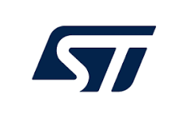

Projet de fin d'année – PFA
STMicroelectronics
Bouskoura, Maroc
09 juillet 2026 – 02 septembre 2026
Réalisation d'un projet d'analyse et d'amélioration du système de suivi des interruptions machine, avec une approche basée sur DMAIC et Power BI.